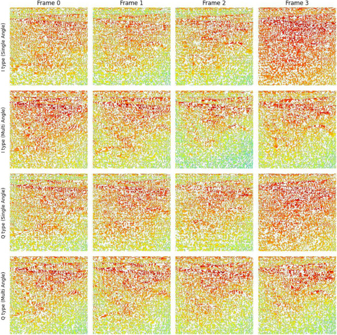

Nazmul Huda Badhon, Imrus Salehin, Md Tomal Ahmed Sajib, Md Sakibul Hassan Rifat, SM Noman, Nazmun Nessa Moon, "TLCNN: Tabular data-based Lightweight Convolutional Neural Network for Electricity Energy Demand Prediction. " on Global Energy Interconnection, 14 November 2025, ISSN: 2590-0358, Elsevier.

Md Tomal Ahmed Sajib, Nazmul Huda Badhon, Imrus Salehin, Md Sakibul Hassan Rifat, Faysal Ahmed, Nazmun Nessa Moon, "A comparative deep learning methodology for plant insect image classification: assessment of CNN architectures and augmentation techniques " on MethodsX, 17 October 2025. ISSN: 2215-0161, Elsevier.

Imrus Salehin, Nazmul Huda Badhon, Md. Tomal Ahmed Sajib, Nazmun Nessa Moon (2025), "DeepUS-ReconSeg: A multi-angle paired B-mode Ultrasound dataset for medical imaging reconstruction and segmentation " on Data in Brief, 112083, 19 September 2025. ISSN: 2352-3409, Elsevier.

Imrus Salehin, Nazmul Huda Badhon, Md Tomal Ahmed Sajib, Mohd Saifuzzaman, Nazmun Nessa Moon (2025), "IQ-UltraRecon: Demodulated IQ ultrasound dataset of human hand and arm tissue for deep learning-based reconstruction " on Data in Brief, 112001, 22 August 2025. ISSN: 2352-3409, Elsevier.

Imrus Salehin, Mahbubur Rahman Khan, Ummya Habiba, Nazmul Huda Badhon, Nazmun Nessa Moon (2024), "BAU-Insectv2: An Agricultural Plant Insect Dataset for Deep Learning and Biomedical Image Analysis " on Data in Brief, 110083, 23 January 2024. ISSN: 2352-3409, Elsevier.

Imrus Salehin, Md Tomal Ahmed Sajib, Nazmul Huda Badhon, Md Sakibul Hassan Rifat, Nazrul Amin, Nazmun Nessa Moon, "Systematic Literature Review of LLM–Large Language Models in Medical: Digital Health, Technology and Applications. " Engineering Reports, 7(9): e70365, 12 September 2025. ISSN: 2577-8196, Wiley.

Nazmul Huda Badhon, Sabit Ahamed Preanto, Abu Shahed Shah Md Nazmul Arefin, Kazi Jahid Hasan, Md. Baharul Islam, "Temporal Convolutional Network Based Indoor Location Recognition from BLE Beacon Signals in Nursing Care Facility. " in International Journal of Activity and Behavior Computing. 13 April 2026, ISSN: 2759-2871.

Imrus Salehin, Nazmul Huda Badhon, Md. Tomal Ahmed Sajib, Md. Sakibul Hassan Rifat, Nazmun Nessa Moon, "Predicting Peak Energy Demand Using Machine Learning Techniques for Efficient Electricity Supply Management. " In Engineering Applications of AI for Demand Forecasting, Vol. 1, p. 13. Taylor & Francis Group, 2026.